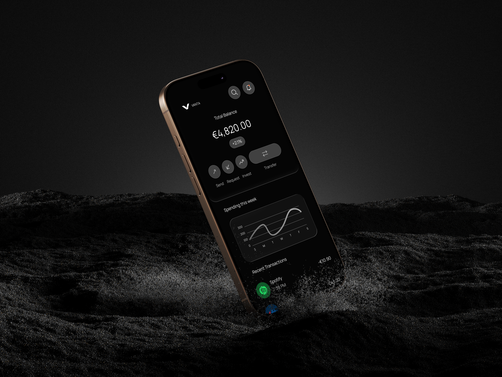
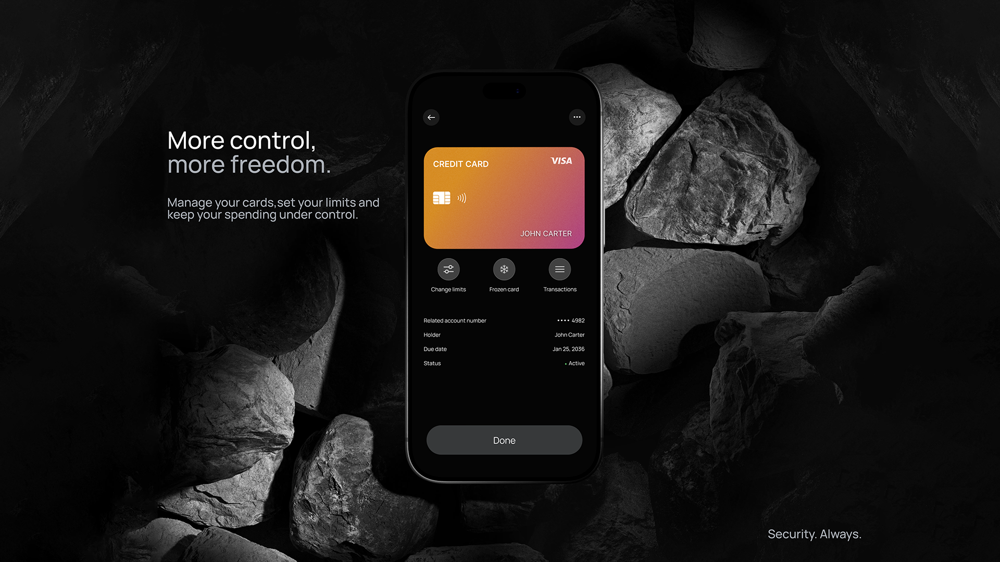
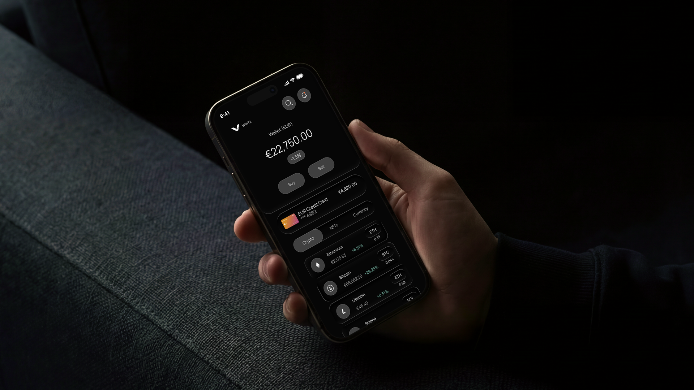
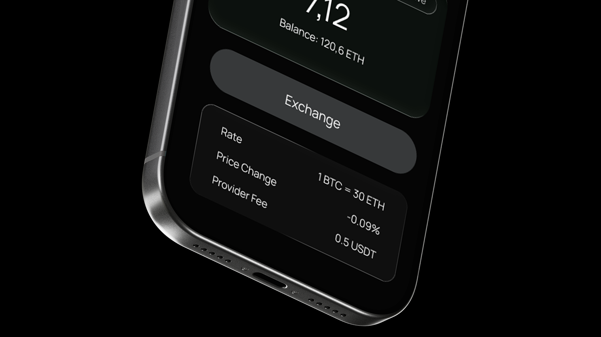
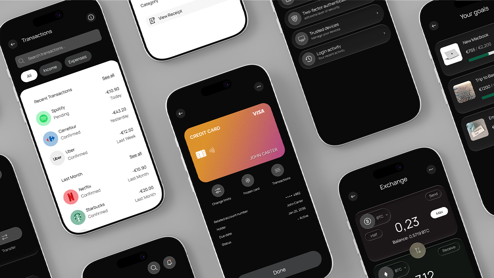

PRODUCT DESIGN · MOBILE BANKING
VANTA
Fast. Safe. Simple. Reimagined.
A modern digital banking product concept built for young professionals — balancing trust, control and a premium mobile experience.

A DIFFERENT KIND OF BANKING EXPERIENCE
More control.
More freedom.
VANTA is positioned as a premium, trustworthy and technology-driven banking experience. The interface keeps the visual language restrained so attention stays on money, movement and decisions.
SECURITY ALWAYS
Control without
the clutter.
The card-management experience puts everyday controls in reach while keeping the interface calm and legible.


EXCHANGE
Clear numbers.
Useful context.
Financial actions are presented with just enough supporting information to help users understand rates, price movement and fees without overwhelming the screen.
EVERYDAY MONEY
See where
it goes.
Transaction history is treated as a useful product surface, combining scannable hierarchy with recognizable merchant cues and simple status indicators.


VANTA / PRODUCT SUMMARY
Premium fintech,
without the friction.
VANTA explores how a serious financial product can feel contemporary without becoming noisy: restrained UI, strong hierarchy and a clear emphasis on user control.